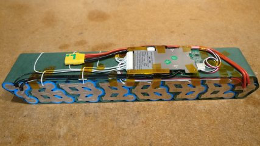
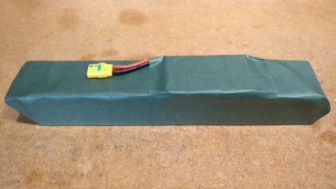
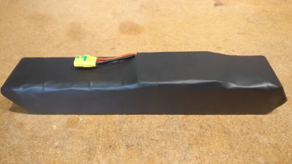
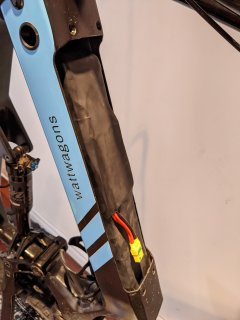

Design Philosophy — Dumb Machine
This build is deliberately simple: throttle in → power out. No pedal assist sensor, no regen braking, no speed sensing complexity. The BBSHD's internal clutch prevents engine braking anyway — this design embraces that. The 20T fixed cog is the primary gear — it's the only ratio that's pedalable with the 42T BBSHD chainring (42/36 is too low, confirmed by spin-out at 50/36). The BBSHD internal clutch handles coasting (bench-test to confirm before ditching the 36T spare). Target cruise: ≤15 mph by feel (no hard speed cap, no speed sensor needed). Note: taller gearing means higher phase current at low RPM — compensate with conservative current limits and soft throttle ramp.
Voltage margin
58.8V / 60V
Full charge is only 1.2V under controller max input. Back-EMF transients are the primary risk.
Trail change
60.5 → 53.3mm
The Zephyr cuts ~7.25mm of trail. Loaded handling should be tested progressively.
Controller fit
Z9 small-motor class
Current-limit because this is outside the controller's usual small-motor use case.
Speed truth
Display approximate
Motor RPM ≠ vehicle speed on this mid-drive. Rider goes by feel — no speed sensor installed.
Complete Parts Specification
Frame & Fork
Component
Specification
Fit Notes
Frame
Mercier Kilo TT, 63cm (c-to-c)
Reynolds 520 CrMo, track geometry
BB shell
68mm English/BSA threaded
Correct for BBSHD 68-73mm variant
Headset standard
1″ threadless, 26.4mm crown race (ISO)
Verify headset matches ISO, not JIS 27.0mm
Rear spacing
120mm (track standard)
Horizontal dropouts, track nuts
Seatpost dia.
26.8mm
Confirmed across multiple sources
Seat clamp
30.0mm (included with frame)
—
Brake mounts
Drilled front & rear for caliper brakes
Rack braze-ons & fender eyes present
Fork
Wound Up Zephyr 1″, 450mm steel steerer (threadless)
Carbon legs, steel steerer, reversed dropouts
Fork rake
35mm (stock Kilo TT = 28mm)
Reduces trail ~7mm → quicker steering
Fork A-to-C
368mm
—
Fork crown race
26.4mm (ISO) — matches frame
matched
Fork tire clearance
700×28c max
23mm Paselas clear easily
Fork brake type
Caliper (drilled)
—
Max spacer stack
44mm (Wound Up spec)
Do not exceed
Cockpit
Component
Specification
Fit Notes
Handlebar
Nitto B263AA (short bullhorn / pursuit)
TT-style, intended for clip-on extensions
Bar stem clamp
25.4mm
Needs 25.4mm stem or 31.8→25.4 shim
Bar lever area OD
22.2mm
Compatible with most e-bike throttles/accessories
Bar inner dia. (tips)
~17mm
Limits bar-end lever options (most TT levers need ≥19mm)
Brake levers
GIRACHA / Dreamworks CNC single-finger
Listed as 23mm clamp — verify fit on 22.2mm bar
Saddle
Berthoud Galibier
~345–365g (varies by hide and version), titanium rails (7mm round), narrow performance shape
Seatpost
Nitto S-83, 26.8mm (Blue Lug variant)
44mm rail width, two-bolt clamp. correct dia.
Brakes
Component
Specification
Fit Notes
Calipers
Dia-Compe 9000Ti (Gran Compe)
Mono-pivot, short-pull caliper
Caliper reach
39–49mm (conservative) / 39–51mm (some listings)
measure actual frame+fork reach
Lever pull type
Short-pull (road caliper compatible)
Do NOT use V-brake / long-pull levers
Wheels & Tires
Component
Specification
Fit Notes
Rear hub
Shimano Dura-Ace 7600 (track), 36h, fixed/fixed
120mm spacing. Both sides: 1.37″×24 TPI main thread + 1.29″×24 TPI left-hand lockring thread. 20T fixed on one side, 36T freewheel on other. Flip wheel to switch.
Clears Zephyr & frame. Consider 25–28mm for loaded riding.
Fixed cog (primary)
20T track cog + lockring
Only pedalable ratio with 42T chainring. BBSHD clutch should provide coasting (verify via bench-test).
Freewheel (spare, other side)
36T thread-on freewheel
Mounted on opposite hub side (1.37″×24 TPI). Flip wheel to use. Fallback if clutch bench-test fails.
Chainring
42T on BBSHD spider
measure chainline to both rear cogs
Chain
Single-speed, quality (e.g. Izumi, KMC Z1)
Must tolerate motor torque + cargo loads
Safety-critical: track hub threading is NOT the same both sides
The Dura-Ace 7600 track hub uses a stepped threading interface. The drive side is 1.37″×24 TPI (standard cog thread shared with freewheel). The non-drive (lockring) side is 1.29″×24 TPI with left-hand threading. The left-hand lockring thread is what prevents the fixed cog from unscrewing under back-torque. Using the wrong lockring, cross-threading, or confusing the two thread standards can lead to the cog coming loose while riding — a potentially catastrophic failure on a fixed-gear setup.
Motor & Drivetrain
Component
Specification
Fit Notes
Motor
Bafang BBSHD (68–73mm variant)
~1000W nominal, ~160 N·m max torque (vendor spec)
Motor BB fit
68mm BSA — matches Kilo TT
confirmed
Stock controller
REMOVED — running external Baserunner
Motor treated as bare 3-phase BLDC + Halls
Gear ratio (20T fixed, primary)
42×20 = 55.2 gear-inches
Primary gear. Pedalable at ~15mph. BBSHD clutch should eliminate drag when coasting (verify via bench-test).
Gear ratio (36T freewheel, spare)
42×36 = 31.5 gear-inches
Too low to pedal (spin-out confirmed at 50/36). Motor-only low-speed torque if ever needed.
Controller & Electronics
Component
Specification
Fit Notes
Controller
Grin Baserunner V6 Z9
FOC, 60V max, 55A peak phase, Z910 motor plug
Firmware req.
≥ 6.025
must verify/update — 6.023 has display bugs
Software req.
Phaserunner Suite ≥ 2.0
Required for Superharness operation
Controller mount
Seat tube (round-tube mount)
Short phase wire run to BBSHD at BB
Harness
Grin Superharness (Main9)
Merges throttle+brake into single analog signal
Display
Grin SW102 (Star Union OLED, KM5s protocol)
System on/off via display power button
Throttle
DYOL bidirectional twist (forward-only use)
1V neutral → 4V power. Regen range (0–1V) mechanically inert on BBSHD.
Programming cable
TRRS-to-USB TTL (Grin or compatible FTDI)
0–5V serial, connects via TRRS jack on controller
Battery & BMS
Component
Specification
Fit Notes
Pack config
14s4p 18650 Sony/Murata VTC6
~12 Ah / 624 Wh. 58.8V full charge, ~52V nominal. Cell rating: 30A cont / 60A peak each → 120A / 240A pack-level headroom (not the bottleneck).
Estimated range
~20–40 miles
Flat + pedal-assist at top end; hilly / full-throttle at bottom end. Throttle-only use skews lower.
BMS
JK-BD4A17S4P (Jikong Smart BMS)
Full protection + 0.4A active balance + Bluetooth
BMS cont. discharge
40A
System bottleneck — set controller limits below this
BMS peak discharge
60A
Short-duration only
BMS charge current
10–40A adjustable
Set to match your charger output (regen N/A — BBSHD clutch)
BMS switching
Low-side, common-port (B- / C-)
Pack+ goes direct; BMS switches negative leg
BMS activation
Charging activation (charger V > pack V + ~2V)
No physical power switch on BMS
BMS comms
Bluetooth (Android/iOS app), RS485 (P4), UART 3.3V (P5)
Default BT password: "1234" or "123456"
Pack mount
Rear rack (in bag/case)
Adds rear weight — monitor handling with Zephyr fork
Discharge connector
Anderson Powerpole (45A-rated)
No precharge — Baserunner input caps will arc slightly on first mate each ride. Accept contact wear, or add external precharge button + resistor in parallel if it becomes a problem.
Charge connector
XT60 (separate pigtail, Y-split with discharge)
Both connectors share Pack+ (N14) and BMS C- through a Y-split at the pack output. Thinner gauge OK on charge pigtail (2–5A charger current).
Main fuse
None (intentional)
BMS OCP is the only overcurrent protection. Slower than a fuse and requires BMS awake. Tradeoff accepted for this build.
Open pack stackReference for raw cell stack and discharge lead orientation before final closure.

BMS mounted, harnesses openCompare BMS placement and routed balance leads before wrapping.

Wrapped pack, green sleeveConfirm main lead exit and strain relief against this reference before bagging the pack.

Wrapped pack, black sleeveSecondary closure view for dimensional comparison and connector emergence.

Frame-fit referenceRough sanity check for battery placement away from the rear rack.
mech Geometry & Handling Notes
Stock Kilo TT (63cm)
~60.5mm
Trail (28mm rake, 75° HTA)
With Zephyr Fork
~53mm
Trail (35mm rake, 75° HTA) — quicker steering
Handling advisory
~7mm trail reduction + rear-biased load (rack battery + panniers) = potentially twitchy front end at speed. Test the bike gradually: unloaded → partially loaded → fully loaded. If handling feels unstable, first upgrade to wider tires (25–28mm), then consider moving battery to main triangle. Swapping back to a lower-rake fork is the nuclear option.
Regen range (0–1V) unused — BBSHD clutch expected to prevent engine braking (verify via bench-test)
Voltage ceiling — 58.8V vs 60V max
58.8V full charge is only 1.2V below the Baserunner's 60V absolute max. Regen is bench-verified capable (not inert as originally assumed) — if re-enabled on-bike, cap Max Regen Voltage at 57.6V to leave headroom below full-charge 58.8V and prevent overcharge-into-a-full-pack. Wiring inductance and load transients can also produce brief voltage spikes. Set BMS overvoltage protection conservatively. Never charge above 4.2V/cell while connected to the controller.
elec Baserunner V6 Z9 → BBSHD Wiring Reference
Throttle-only build — simplified wiring
This section covers ONLY what gets connected. No PAS sensor, no speed sensor, no regen. The BBSHD internal clutch means the wheel cannot backdrive the motor. DYOL rollback does nothing mechanically. Embrace the simplicity.
Z910 Motor Plug → BBSHD (9 connections total)
The Baserunner's Z910 connector carries all 9 wires to the motor in a single plug. You'll build an adapter harness by cutting a Z910 extension cable and splicing to the BBSHD's bare wires.
#
Z910 Wire
→ BBSHD Wire
Type
Notes
1
Blue Phase
Phase A (thick)
HIGH CURRENT
Anderson Powerpole connectors (already installed). Start color-to-color — Autotune corrects mapping in software.
2
Green Phase
Phase B (thick)
HIGH CURRENT
Anderson Powerpole connectors. Verify 45A-rated contacts (not 15A/30A).
3
Yellow Phase
Phase C (thick)
HIGH CURRENT
Keep phase runs short, away from signal wires. Zip-tie harness so flex happens away from crimps.
4
Hall 5V
Red (Hall power)
Logic
Sensor supply. DMM: confirm 5V present when controller powered.
5
Hall GND
Black (Hall ground)
Logic
Sensor ground. No continuity to phase wires or motor case.
6
Yellow Hall
Grey (BBSHD Hall A)
Logic
Community-reported mapping — must verify on your unit. Autotune's Hall Table Detection will confirm correct sequence. If motor cogs/jerks after autotune: Hall wires are wrong.
7
Green Hall
Blue (BBSHD Hall B)
Logic
8
Blue Hall
White (BBSHD Hall C)
Logic
9
Speed/Temp
Purple (thermistor)
Analog
NTC thermistor for motor temp monitoring. Configure in Phaserunner Suite temp tab.
Phase wire safety
Phase wires carry up to 55A peak. Anderson Powerpole crimps must be solid and fully seated. A loose connection under load = arc flash risk. Zip-tie or clamp the harness so vibration-induced bending happens away from the connector, not at it. Double-check no phase wire can contact the frame or any signal wire.
Hall/temp wires — solder + heatshrink
These are low-current logic signals. Solder each splice, stagger the joints so you don't create one thick lump, and use adhesive-lined heatshrink on each joint. Then wrap the bundle in an outer sleeve or loom. Use a small locking connector (JST, Molex) if you want disconnectability, but avoid bare spades — they can vibrate loose on logic signals too.
Main9 Signal Plug → Superharness → Throttle (the control path)
This is the "brain" side — how your twist grip talks to the controller.
THROTTLE SIGNAL CHAINDYOL twist gripSuperharnessBaserunner
┌─────────────────┐ ┌──────────────────────┐ ┌──────────────────┐
│ 3-pin yellow │—— Higo —→│ Remaps 1V–4V to │—— Main9 —→│ Analog Input 2 │
│ Higo connector │ │ 0.95V–3.6V output │ │ (Pin 6, Blue) │
│ │ │ │ │ │
│ 1V = neutral │ │ Also carries: │ │ On/Off (Pin 8, │
│ 4V = full power │ │ • SW102 display data │ │ Orange) → Batt+ │
│ 0V = regen (N/A)│ │ • On/Off switch sig │ │ via display pwr │
└─────────────────┘ │ • E-brake (if used) │ └──────────────────┘
└──────────────────────┘
KEY: You twist the grip → DYOL outputs 1–4V → Superharness remaps → Baserunner reads analog → FOC drives motor.
That's it. No PAS. No speed sensor. No regen. Twist and go.
Power Path (Battery → Controller → Motor)
BATTERY POWER PATH
┌—→ Powerpoles V+ —→ Baserunner Batt V+Pack+ (N14) —→ Y-split ———┤
└—→ XT60 V+ —→ Charger V+Pack- (N0) —→ JK BMS B- —→ FETs —→ BMS C- (switched) —→ Y-split ——┬—→ Powerpoles GND —→ Baserunner Batt GND
│
└—→ XT60 GND —→ Charger GND(Separate harness) Baserunner Z910 —→ BBSHD 3× phases + Halls + tempPack+ goes DIRECT to both connectors — BMS does NOT switch positive.
BMS switches the NEGATIVE path only — C- Y-splits to both discharge (Powerpoles) and charge (XT60).
NO FUSE — BMS OCP is the only overcurrent protection.
NO PRECHARGE — Powerpoles will arc slightly on first mate each ride into Baserunner input caps.
What's NOT Connected (and why)
Connector / Wire
Status
Reason
6-pin PAS / Torque plug (Z609)
capped
No pedal assist sensor. Throttle-only build.
WP8 Cycle Analyst plug (Z812)
capped
Using Superharness + SW102 instead of Cycle Analyst.
DYOL regen range (0V–1V)
ignored
BBSHD internal clutch expected to prevent engine braking (verify via bench-test). Signal is valid but should produce zero mechanical effect.
Speed sensor input
omitted by choice
Motor RPM ≠ wheel speed on a mid-drive. SW102 speed will be approximate/wrong. Rider goes by feel, no hard speed cap needed.
Assembly & Commissioning
Steps are ordered to match the actual remaining build sequence. Already-completed work is collapsed at the top for reference.
Before any motor tests
Secure bike so drivetrain can rotate freely in BOTH directions. The Baserunner requires bidirectional rotation during Autotune. Remove chain if necessary for free rotation.
13 Firmware Pre-Flight
14 Autotune & Hall Table
15 Throttle Verification
16 Anti-Lug Tuning & Thermal Config
17 Progressive Load Testing
18 Finishing Touches
Known Gotchas & Design Advisories
58.8V vs 60V headroom
Your 14s pack at full charge (58.8V) leaves only 1.2V before the Baserunner's absolute 60V max. Even without regen, back-EMF spikes and wiring inductance under sudden load changes can produce transient overvoltage. Never charge the pack above 4.2V/cell while connected to the controller.
6.025 firmware display bug
The SW102 will show 82.5% of actual amps and watts due to a known KM5s scaling bug in 6.025 firmware. 500W on screen = ~606W real. Use Phaserunner Suite for accurate power numbers.
Superharness early hardware
Units sold before June 2024 had noise/reliability issues (light ports stuck on, harness unresponsive until power-cycled). If you have an early unit, Grin offered replacements. Check the 3 LEDs for diagnostic info.
Regen — partially capable (bench-verified 2026-04-23)
Bench test with motor free-spinning confirmed the Baserunner can regen when the motor is already spinning under power (reverse throttle twist brakes the motor and pushes current back onto the DC bus — enough to overvoltage-trip a bench supply). Pure-coast regen is still expected to fail because the BBSHD clutch disengages when the chainring spins faster than the motor (no rotor motion = no energy to harvest), and this build is fixed-gear so coasting doesn't exist anyway. For commissioning: set Regen Current = 0A (bench supplies can't sink regen current). Optional on-bike later: re-enable at low current (~5A) with Max Regen Voltage at 57.6V for gentle descent braking into the real battery. Primary braking is always mechanical (Dia-Compe calipers).
42/20 lugging risk at low RPM
Taller gearing means the motor spins slower for a given road speed. On a mid-drive, low motor RPM can drive phase current much higher than battery current — and phase current is what heats windings and connectors. Compensate: conservative phase/battery current limits, soft throttle ramp, and help the motor with pedal input from dead stops on hills.
Speed readout will be wrong without external sensor
Motor RPM ≠ wheel speed on a mid-drive (gear reduction + freewheel). The SW102 will show motor-derived "speed" that doesn't match real wheel speed, especially varying by gear and load. Add a spoke magnet + magnetic pickup for accurate speedometer.
JK BMS UART/GPS port (P5) — high voltage hazard
If you ever connect an ESP32 for BMS telemetry: P5 pin 1 (VGPS) outputs near full pack voltage (~58V) on a tiny 1.25mm JST connector next to 3.3V logic pins. Do not connect to any microcontroller without verifying pinout. One rotated connector = dead ESP32 or worse.
23mm tires on a loaded e-bike
Your Pasela 700×23c are compatible but provide minimal contact patch and cushion for a motor-assisted cargo build. If the bike feels sketchy loaded, 25mm or 28mm Paselas are a direct swap and one of the easiest improvements to ride quality and grip.
Chainline — optimize for 20T fixed side
With 20T as the primary cog, measure and optimize chainline for the fixed-cog side of the hub. If you ever swap to the 36T freewheel side, accept the offset. Up to ~5mm offset is tolerable with a single-speed chain under motor torque.
comm Discrepancy Log
This section tracks corrections made after reconciling the build document against deep-research-report.md. Each row documents an earlier simplification that was corrected to prevent bad decisions.
Earlier Simplification
Corrected To
Why It Matters
Rear hub described as 1.37″×24 TPI both sides
Track hub uses the standard cog thread (1.37″×24 TPI drive side) plus a smaller left-hand lockring thread (1.29″×24 TPI non-drive side)
Safety-critical interface for fixed-gear use. Wrong lockring threading can cause the cog to unscrew under back-torque.
JK BMS activation read like a universal fixed +2V rule
Start at about pack voltage plus 2V per the BD4A manual, then adjust conditionally near full charge without exceeding cell limits
Avoids treating a stubborn near-full pack as a dead BMS when it may simply need different wake-up conditions.
Galibier weight was stated as one exact number (346g)
Use a range of roughly 345–365g depending on hide and version
Keeps the spec honest instead of pretending seller listings agree.
Steering change was described only as "quicker"
Trail is now quantified: ~60.5mm stock to ~53.3mm with the Zephyr (−7.25mm)
The handling warning becomes concrete enough to shape test planning.
Firmware guidance was tied to a specific confident claim
The real requirement is a Superharness-compatible firmware and software pairing, plus awareness of the KM5s scaling issue
More accurate troubleshooting posture, less cargo-cult version chasing.
Controller setup implied that speed display would just work
Mid-drive speed needs a separate wheel input if you care about accuracy or speed limiting
Prevents false validation of system behavior from bad display data.
Pack photos were mentioned but not anchored in the page
Local battery photos are now embedded in the Battery & BMS spec section
Gives a visual QA reference before final wrap and bagging.
Quick Fault Triage
Symptom
Most Likely Cause
Check
Controller won't power on
On/Off (Key+) not reaching Batt+ via display
Confirm SW102 plugged in + powered; Main9 On/Off has battery V+ when display on
SW102 shows --.- or EFF
KM5s protocol not communicating
Superharness param file loaded; firmware ≥6.025; TX/RX not swapped
No throttle response
Superharness 2mA current detection
DYOL is Hall-type (should be fine); check 3-pin Higo; check Superharness LEDs
Motor spins backward
Phase/Hall mapping reversed
"Flip Motor Spin Direction" in software — don't swap wires
Motor cogs / jerks
Hall wiring error or bad sensor
Re-verify Halls with scope; re-run Hall table detection
Assist levels don't toggle
Firmware 6.023 bug
Update to ≥6.025
BMS trips during riding
Discharge overcurrent, undervoltage, overtemp, or wiring fault
Check BMS app for which specific protection triggered. Overcurrent: lower controller limits. Undervoltage: cells depleted or imbalanced. Overtemp: check pack/BMS temp sensors. Wiring: check balance leads.
BMS won't wake up
Charging activation not met
Charger voltage must exceed pack voltage by ~2V; B+ board power connected?
Lights cause ERR30
High current ripple from light
Power light directly from battery, not through Superharness
Lever slips on bar
23mm clamp on 22.2mm bar
Add 0.4mm full-wrap aluminum shim sleeve
Front end feels twitchy loaded
Reduced trail (53mm) + rear-biased weight
Wider tires first; move battery to triangle; check tire pressure